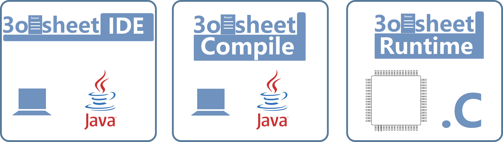
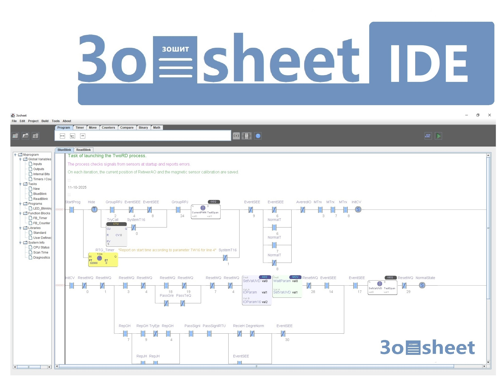
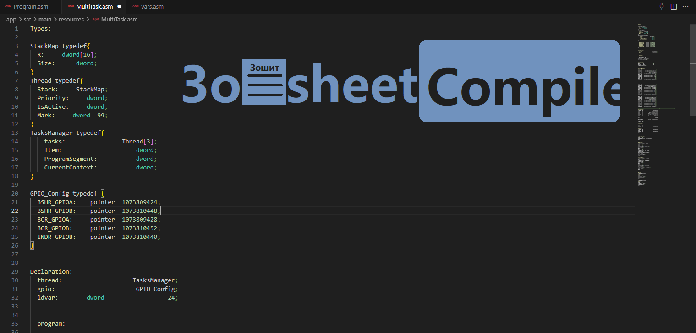
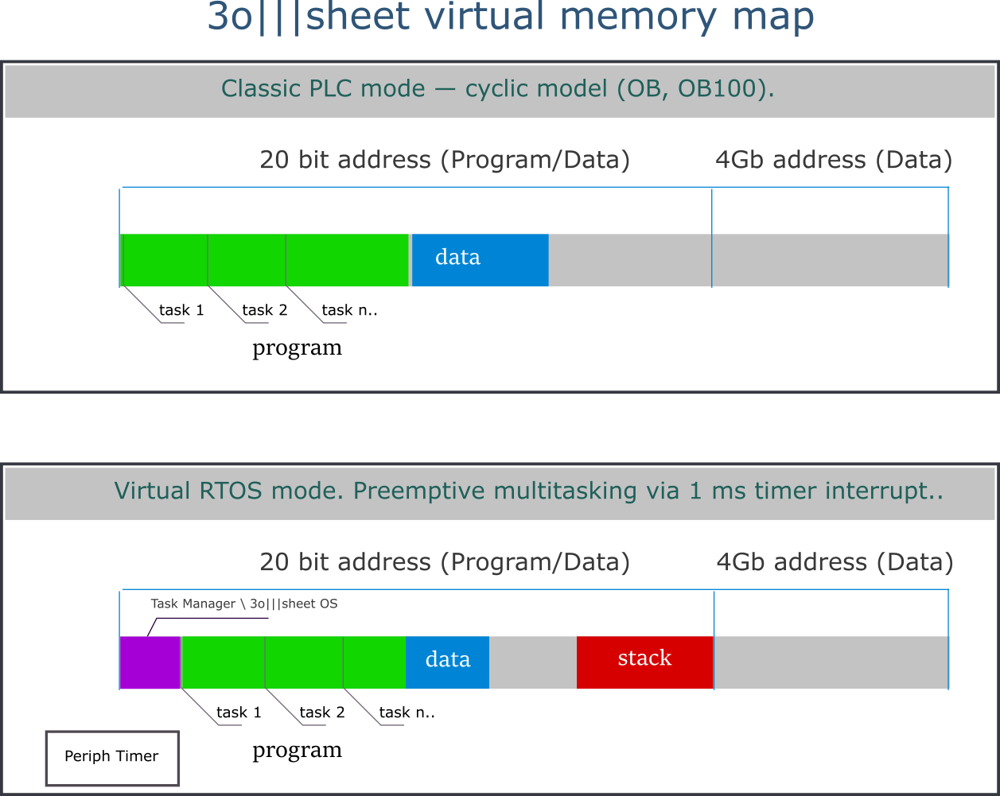
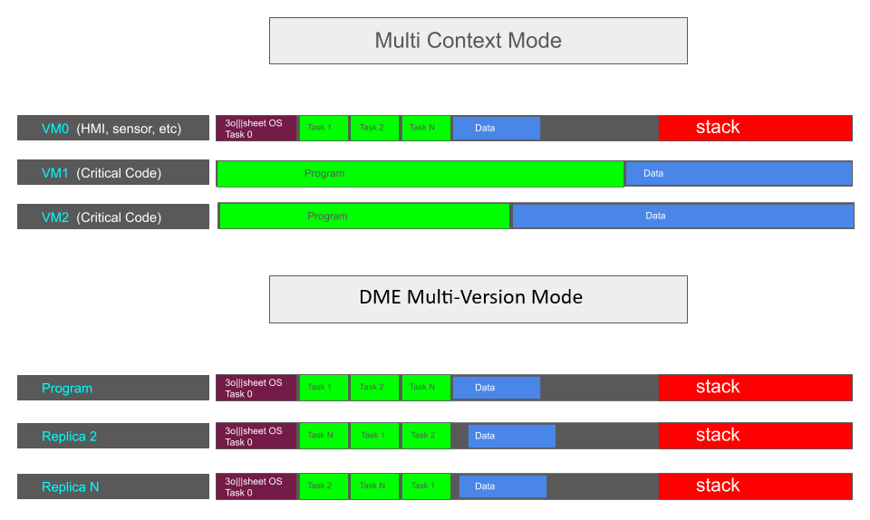

3o|||sheet is a universal software environment for developing applications for Programmable Logic Controllers (PLCs).
- Hardware Independence
- Integrated Development Environment (IDE)
3o|||sheet is a universal software environment for developing applications for Programmable Logic Controllers (PLCs).

A lightweight, cross-platform IDE built on OpenJDK. Runs on single-board computers with minimal resources.
Supports LD, FBD, and ST languages plus a virtual machine instruction set for advanced logic design.
Offers extensive debugging capabilities: developers can modify code in real-time without physically restarting the PLC.
The development environment can create executable programs for the PLC in two modes:

Is a standalone application that compiles text programs written in LD, FBD, ST and .3osheet into executable bytecode for a virtual machine.
The compiler can be integrated into third-party development tools (for example, Visual Studio, etc.).
It includes a complete set of tools for working with complex custom variables, virtual stack, and context management, enabling the development of sophisticated recursive algorithms and multithreaded tasks (coroutines).

Register-based Virtual Machine running safely in a sandbox. Works on devices with only 8 KB RAM and full peripheral access.
Stack and heap dynamically share a contiguous memory area, allowing flexible memory allocation with minimal overhead.

The system supports two modes of operation: either the execution of multiple independent contexts (virtual machines running distinct programs) or a single program operating in DME mode with N replicas

The platform incorporates a unique divergent architecture designed for maximum reliability and fault tolerance in safety-critical applications (p. 1). Divergent Multi-Version Execution (DME) is a runtime semantic consistency verifier for diversified executions (p. 1). Each replica is compiled independently, producing distinct physical code and data memory layouts while preserving identical opcode-level semantics and isomorphic control-flow graphs (pp. 1-2). Faults are detected by comparing canonical instruction traces—including opcodes, register identifiers, loaded/stored values, and computed results—while explicitly discarding layout-dependent addresses (pp. 1, 4). The approach targets bare-metal embedded systems without an MMU, particularly 32-bit controllers (pp. 2, 15). DME transforms low-level correlated perturbations into observable semantic divergence or structural address-space collapse without altering program semantics (pp. 2, 9).
Comparative analysis of fault detection guarantees between traditional redundancy and DME based on the fault correlation model.
| Fault Scenario / Model | Classical Lockstep / TMR | DME (Divergent Multi-Version) |
|---|---|---|
|
Fully Correlated PC Faults Identical perturbation across replicas |ΔPC| ≥ l/N |
✗ NO DETECT Silent Data Corruption |
✓ DETERMINISTIC Within 1 instruction slice |
|
Small Fully Correlated PC Faults Identical perturbation within alignment window |ΔPC| < l/N |
✗ NO DETECT |
⚠️ NOT GUARANTEED Alignment window risk |
|
Differing Perturbations / Single-Replica Asymmetric PC faults or hardware faults in 1 replica |
✓ DETERMINISTIC Immediate (PC mismatch) |
✓ PROBABILISTIC Exponential decay (γ·ε)k |
|
Identical Pointer / Data Corruption Corrupted return addresses, null pointers, buffer overflows |
✗ NO DETECT If address is within legal region |
✓ DETERMINISTIC Zero-latency Address Collapse |
Measured execution times for boolean and Integer and floating-point operations on different microcontrollers and PLCs.
| Device | Boolean Operation | Integer / Floating-Point Operation |
|---|---|---|
| STM32G030 64Mhz (3o|||sheet Runtime) | 2.1 μs | 6.5/24 μs |
| STM32F103 72Mhz (3o|||sheet Runtime) | 1.9 μs | 4.6/4.6 μs |
| STM32F407 168Mhz (3o|||sheet Runtime) | 1.2 μs | 2.8/2.8 μs |
| CH32V203 (144Mhz Mode) (3o|||sheet Runtime) | 0.8 μs | 3.1/18.3 μs |
| CH32V307 144Mhz (3o|||sheet Runtime) | 0.8 μs | 5.5/5.5 μs |
| Rockwell Micro810 | 2.5 μs | 8.6/ - μs |
| Rockwell Compact GuardLogix 5380 1Ghz | ~0.01–0.05 μs | ~0.01–0.08 μs |
| Siemens S7-1200 | ~0.08ns | ~2.3μs/ 4 |